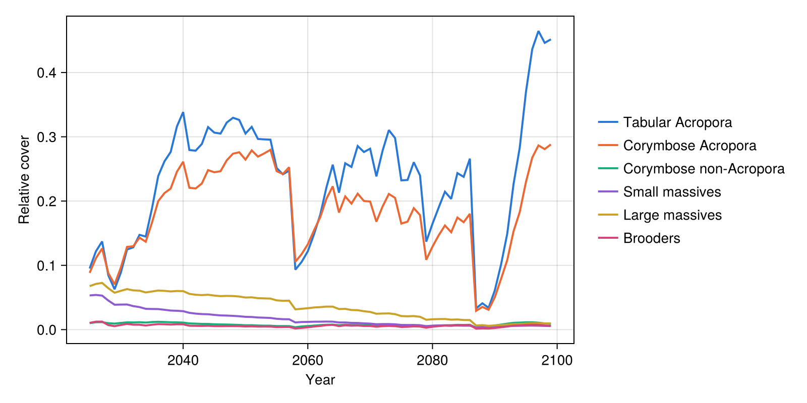
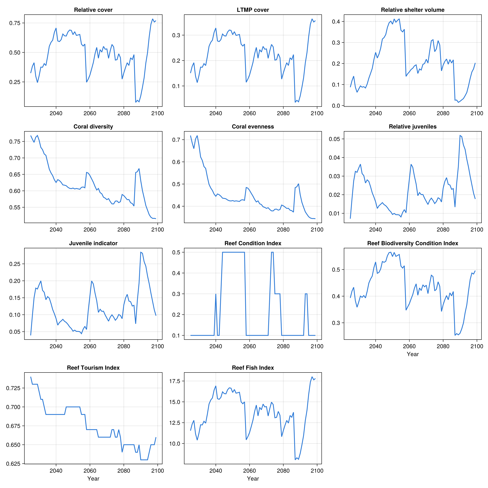

C~scape
C~scape is an integral-projection model of coral colony size classes written in R. This example reads the saved output of one C~scape run on a synthetic one-reef domain (2025-2099), puts it into the layout ADRIAIndicators expects, and calculates the cover, shelter volume, diversity, juvenile and composite index metrics.
Note: To run the following code, RData.jl should be added to the environment.
The output file and the reef are synthetic, so the resulting metrics are illustrative only. To run the code, download the files from the docs/examples/coral_models folder of the ADRIAIndicators.jl repository.
using RData
import ADRIAIndicators as AI1. C~scape output
C~scape saves one .rds file per run, holding one six-dimensional array of [year ⋅ site ⋅ intervened ⋅ type ⋅ enhancement ⋅ value]. The file stores the names of the dimensions, but RData.load drops them by default, and ADRIAIndicators expects plain arrays anyway, so the code below selects each dimension by its position in that order. The 100 size classes are in value slots 7-106 and are colony counts, so converting to cover needs the diameter of each class, and which classes are juvenile. Both belong to the demography of each type, and are stored in size_classes.rds.
The output does not record the reef's area either, so the total and habitable area are taken from the domain description.
habitable_area_m2 = [38910.4] # [locations], m²
reef_area_m2 = [83897.0] # [locations], m², includes non-habitable area
types = ["acro_table", "acro_corym", "corym_non_acro", "small_massive", "large_massive", "brooder"]
size_classes = RData.load("data/cscape/size_classes.rds")
# Colony diameter (cm) and juvenile classes [groups ⋅ sizes]
diam_cm = permutedims(reduce(hcat, [Float64.(size_classes[t]["meshpoints_diam"]) for t in types]))
is_juvenile = permutedims(reduce(hcat, [Bool.(size_classes[t]["juvenile"]) for t in types]))
out = RData.load("data/cscape/Array_scenario_101000100001_rep_1_draw_NA.rds")
size(out) # (76, 1, 2, 6, 14, 107)2. Adapting the output to ADRIAIndicators
ADRIAIndicators expects relative cover (a proportion of habitable area) with dimensions [timesteps ⋅ groups ⋅ sizes ⋅ locations]. The first year is the initial state, so it is dropped. The intervened sub-areas and the 14 enhancement classes are summed, and counts are converted to cover: a colony of diameter d cm has a planar area of π(d/200)² m².
# [timesteps ⋅ locations ⋅ groups ⋅ sizes]
counts = dropdims(sum(out[2:end, :, :, :, :, 7:106]; dims=(3, 5)); dims=(3, 5))
counts = permutedims(counts, (1, 3, 4, 2)) # [timesteps ⋅ groups ⋅ sizes ⋅ locations]
colony_area_m2 = π .* (diam_cm ./ 200) .^ 2
rel_cover = counts .* reshape(colony_area_m2, 1, size(colony_area_m2)...) ./
reshape(habitable_area_m2, 1, 1, 1, :)3. Indicators
Shelter volume needs the colony diameters (cm) and the parameters of a log-log planar area model for each group and size class. Here every group uses the same illustrative values; the in-depth example maps C~scape's groups onto ADRIA's functional group parameters.
n_groups, n_sizes = size(diam_cm)
planar_area_params = zeros(Float64, n_groups, n_sizes, 2) # [groups ⋅ sizes ⋅ (intercept, coefficient)]
planar_area_params[:, :, 1] .= -8.95 # intercept
planar_area_params[:, :, 2] .= 2.80 # coefficient
# Reference colony defining the maximum shelter volume: (diameter cm, intercept, coefficient)
reference = (95.0, -8.95, 2.80)
max_juvenile_density = 15.0 # individuals/m²# Cover [timesteps ⋅ locations]
relative_cover = AI.relative_cover(rel_cover)
ltmp_cover = AI.ltmp_cover(rel_cover, habitable_area_m2, reef_area_m2)
# Shelter volume, summed over groups and sizes [timesteps ⋅ locations]
rsv = AI.relative_shelter_volume(
rel_cover, diam_cm, planar_area_params, habitable_area_m2, reference
)
total_rsv = clamp.(dropdims(sum(rsv; dims=(2, 3)); dims=(2, 3)), 0.0, 1.0)
# Diversity, from the cover of each group [timesteps ⋅ groups ⋅ locations]
relative_loc_taxa_cover = AI.relative_loc_taxa_cover(rel_cover)
coral_diversity = AI.coral_diversity(relative_loc_taxa_cover)
coral_evenness = AI.coral_evenness(relative_loc_taxa_cover)
# Juveniles. Note that mean colony diameters are expected in m here, whereas the
# shelter volume functions take cm.
relative_juveniles = AI.relative_juveniles(rel_cover, is_juvenile)
juvenile_indicator = AI.juvenile_indicator(
rel_cover, is_juvenile, habitable_area_m2, diam_cm ./ 100, max_juvenile_density
)C~scape does not model rubble, so only the composite indices that do not need it are used.
reef_condition_index = AI.reef_condition_index(ltmp_cover, total_rsv, juvenile_indicator)
reef_biodiversity_condition_index = AI.reef_biodiversity_condition_index(
relative_cover, coral_diversity, total_rsv
)
reef_tourism_index = AI.reef_tourism_index_no_rubble(
ltmp_cover, coral_evenness, total_rsv, relative_juveniles
)
reef_fish_index = AI.reef_fish_index(relative_cover)4. Results
final_values = [
"Relative cover" => relative_cover,
"LTMP cover" => ltmp_cover,
"Relative shelter volume" => total_rsv,
"Coral diversity" => coral_diversity,
"Coral evenness" => coral_evenness,
"Relative juveniles" => relative_juveniles,
"Juvenile indicator" => juvenile_indicator,
"Reef Condition Index" => reef_condition_index,
"Reef Biodiversity Condition Index" => reef_biodiversity_condition_index,
"Reef Tourism Index" => reef_tourism_index,
"Reef Fish Index" => reef_fish_index
]
println("Final timestep:")
for (name, metric) in final_values
println(rpad(name, 35), round.(metric[end, :]; digits=3))
end5. Plots
The metrics are plain arrays, so any plotting package can be used; Makie.jl is shown here. This code is not run when the documentation is built: the images below are produced by running this whole page's code with docs/figures/cscape_figures.jl.
using CairoMakie
years = 2025:2099
group_names = ["Tabular Acropora", "Corymbose Acropora", "Corymbose non-Acropora",
"Small massives", "Large massives", "Brooders"]
group_colors = ["#2a78d6", "#eb6834", "#1baf7a", "#8e5bd0", "#c9a227", "#d6457a"]
# Relative cover of each coral type
fig_groups = Figure(size=(800, 400))
ax_groups = Axis(fig_groups[1, 1]; xlabel="Year", ylabel="Relative cover")
for g in 1:n_groups
lines!(ax_groups, years, relative_loc_taxa_cover[:, g, 1]; color=group_colors[g], linewidth=2)
end
Legend(
fig_groups[1, 2],
[LineElement(; color=c, linewidth=2) for c in group_colors],
group_names; framevisible=false
)
# Every metric of the results above, one panel per metric
fig_metrics = Figure(size=(1200, 1200))
for (i, (name, metric)) in enumerate(final_values)
ax = Axis(
fig_metrics[fld1(i, 3), mod1(i, 3)]; title=name,
xlabel=i > length(final_values) - 3 ? "Year" : ""
)
lines!(ax, years, metric[:, 1]; color="#2a78d6", linewidth=2)
end
Cover of each coral type over time. Tabular and corymbose Acropora carry nearly all the cover, lose most of it in the strong heat events (around 2058 and 2087-2089) and recover.

All metrics over time.
This is one default run of C~scape, so it shows the model's trajectory, not its uncertainty. Comparing C~scape and CoralPOP calculates the same metrics for CoralPOP, run under the same heat stress, and compares the two models. It also checks the results against each model's own cover and lists the most common pitfalls when adapting an output.